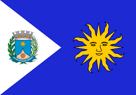

Hino de Araraquara

Araraquara, tu nasceste
de uma lenda e uma poesia
crença tupi que além das serras
surgindo o sol ali morava o dia
tendo por bandeira a lenda
aqui chegou, Pedro José Neto
sonhando ergueu a sua tenda
sob teu céu, o seu primeiro teto
Araraquara ensolarada
o sol é o teu coração
as tuas tardes são douradas
es meu querido torrão
Araraquara terra amada
Aracoara da língua tupi
tu és morada é manhã nascendo
nome acalento que foi dado a ti
Amo, meu berço Natal
Onde pisaram bravos bandeirantes
Eu canto as maravilhas tuas,
Legado eterno desses teus gigantes
Araraquara ensolarada
o sol é o teu coração
as tuas tardes são douradas
és meu querido torrão
Araraquara adorada
tu és morada e filha do sol
explendoroza é tua alvorada
e repousante o teu arrebol
Creio no teu bravo povo
no amanhã e na tua glória
teus jovens seguirão confiantes
novos gigantes desta tua história
Araraquara ensolarada
o sol é o teu coração
as tuas tardes são douradas
és meu querido torrão